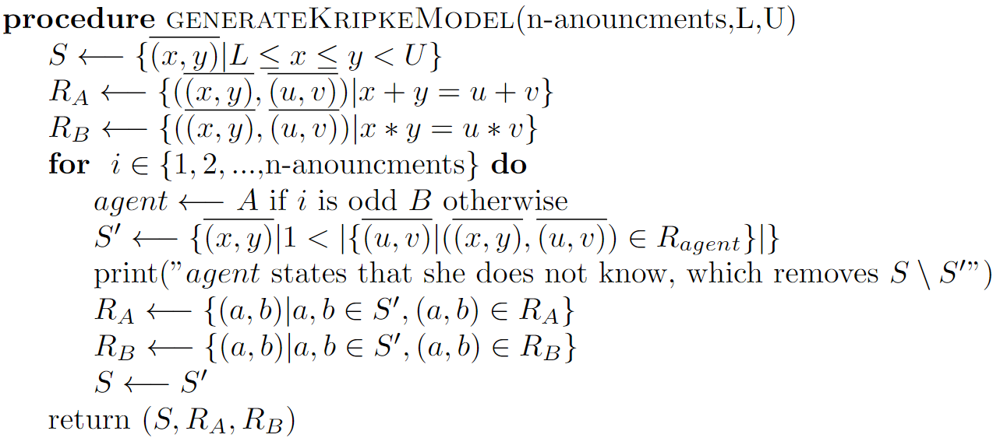

In this section we will have a closer look at how we can use the previously defined logical sentences in order to create an algorithm to derive the solvability of each different number combination.
Using the previously defined sentences we can evaluate after how many iterations of announcing "I do not know the numbers" a state is removed from the model. As noted before, we can remove a state from the model when it is a singleton from the view of the agent whose turn it is. Thus, if we have a sequence of announcements that reduce the model and we can show that Ki(u,v) holds where i is the current agent (i.e. the state exists and it is a singleton from the perspective of agent i). Then we know that the agent knows that the state is removed at this iteration.
From this reasoning we can create the following iterative method. We start by assuming agent i announces first, followed by agent j. Then we know that a state (u,v) can be deduced without any announcement if Ki(u,v) is true, i.e. the state is a singleton or in other words, (u,v) only has a reflexive relation in Ri. Then we can remove all of the singleton states (from the perspective of agent i) by announcing that we do not know the number, i.e. [¬KNi(x,y)]. We can then evaluate [¬KNi(x,y)]Kj(u,v) at each state (u,v) in the model. This statement is true if and only if (u,v) is a singleton or (u,v) was removed during a previous iteration. By keeping track of the new states for which the statement is true we can find which states are removed during which iteration.
This process can be repeated by adding alternating announcements for the agent, e.g. [¬KNi(x,y)][¬KNj(x,y)][¬KNi(x,y)][¬KNj(x,y)]Ki(u,v) to find the states which can be deduced at each announcement step. Note that we can stop this process when we find 2 consecutive iterations in which we do not remove any states.
We will now argue why this is a valid stopping criterion for the algorithm. Assume that agent i announced that they do not know and no states were removed from the model by this announcement. Then, if agent j announces that they do not know and no states were removed from the model, then agent i considers the model from exactly the same perspective as they did 2 announcements ago. Since we are in the same state, the same action will lead to the same result. Hence there will never be any additional states which will be removed from that point onward. Note that this condition does not give any guarantees that the model will be empty after the algorithm, i.e. there is no guarantee that all generated number pairs can be deduced using a sequence of "I do not know" announcements.
In this section we will look at how we can implement the above algorithm in an efficient manner. The algorithm that will be described was also implemented in JavaScript and is included in the demo page of the report.
We will start by creating a set of candidate_pairs containing all possible random numbers that can be considered. Note that in the original puzzle they use an inclusive lower bound of 1 and an exclusive upper bound of 100. Also note that due to addition and multiplication being abelian operations there is no difference between (x,y) and (y,x) and only one of them needs to be added to the candidate_pairs. In case one where to extend the the problem to different operations, then this assumption may not need to be satisfied in which case we need to add all pairs (x,y).
Next we will create 2 functions: generate_sums(candidate_pairs) and generate_products(candidate_pairs), which compute a map containing the sum or product as the key and an array of pairs which sum or multiply to the key as the value. Note that these sets correspond to the relations for Alice and Bob in our formal model.
We will loop until no states are removed for 2 consecutive iterations. We loop over the map of product/sum (depending on the starting agent) and remove all pairs which are the only pair corresponding to a product/sum value. In other words, we remove all states which do not have a relation to another state.
Then we recompute the product and sum value between each step. It is recommended to also keep track of which nodes were removed during which step of the iteration in order to obtain the list of solvable initial conditions and after how many steps they are solved. The pseudocode to do this is shown below.
